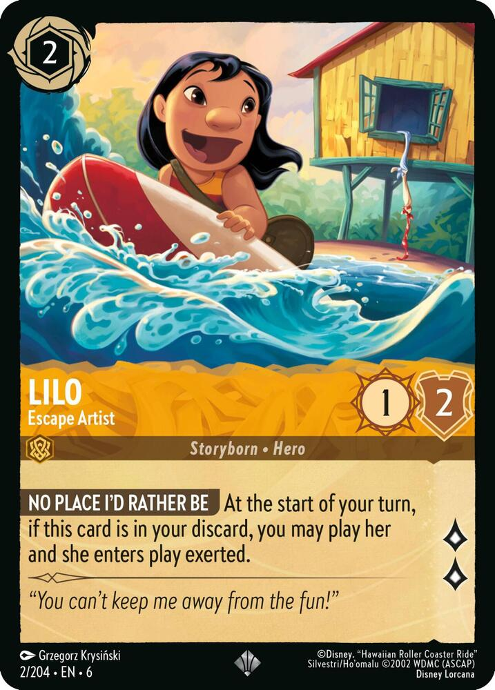

Inkable (You may play this card face down as a colorless land with “: Add .”)
Quest 2 (: This creature deals 2 damage to target opponent. Activate only as a sorcery.)
NO PLACE I’D RATHER BEAt the beginning of your upkeep, if Lilo, Escape Artist is in your graveyard, you may pay . If you do, return her to the battlefield tapped.
“You can’t keep me away from the fun!”
| Inkable (gold ring on cost) | Inkable keyword — face-down play as a colorless : Add land. |
| Quest (2 lore) | Quest 2 — sorcery-speed tap to deal 2 damage to an opponent. |
| 1 Strength / 2 Willpower | Power/toughness 1/2 (existing shields). |
| Storyborn · Hero | Legendary Creature — Human Hero. |
| No Place I’d Rather Be | Upkeep-triggered graveyard return for ; she enters tapped. |